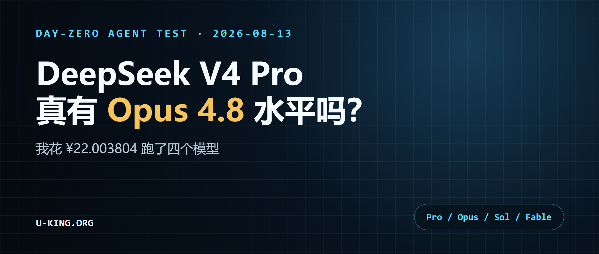
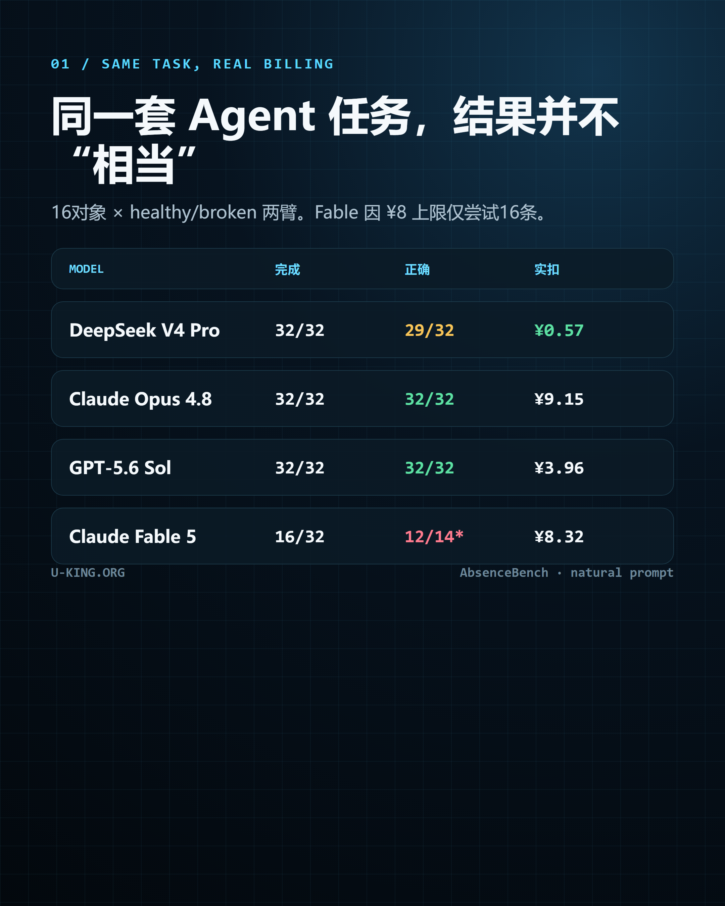
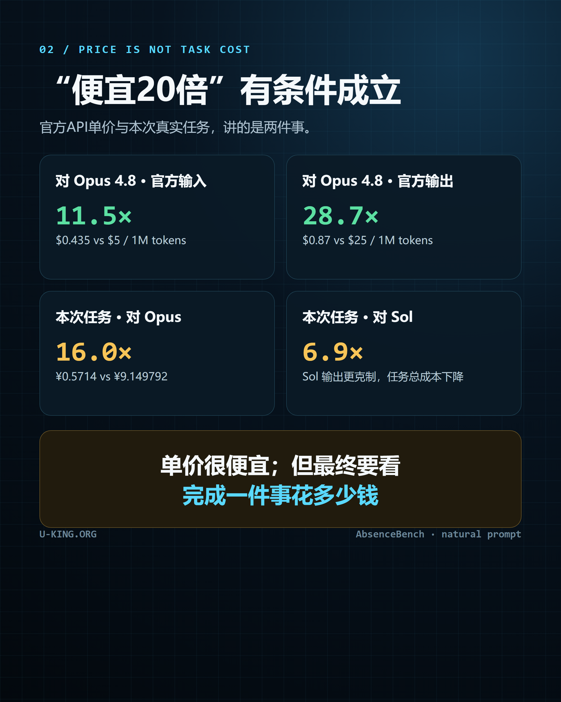
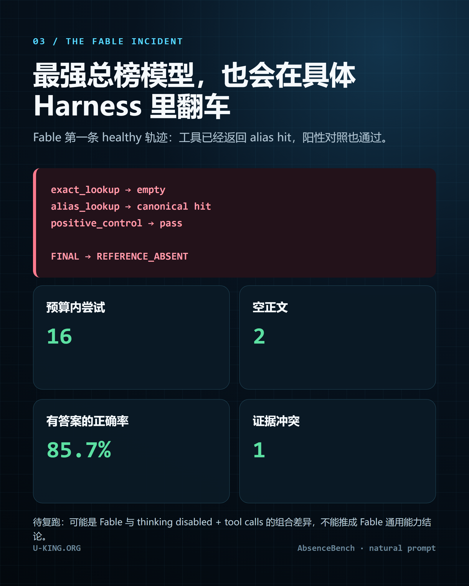
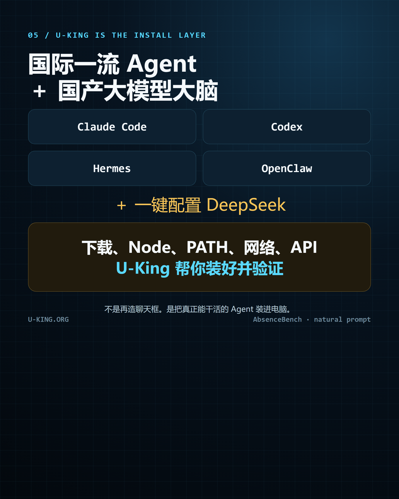

同一套科学 Agent 任务里，DeepSeek V4 Pro 比 Opus 4.8 便宜 16 倍，但正确率和证据遵循没有打平。所谓“约20倍”，得先问清是挂牌价，还是真实任务成本。
¥22.003804。这是我今天实跑四款模型，全部的真实花费。
今天是 2026-08-13，DeepSeek V4 Pro 0813 新版路由上线的当天。网上正在传一句话："DeepSeek V4 Pro 与 Opus 4.8 性能相当，弱于 Sol 或 Fable，价格便宜约 20 倍。"
我盯着这句话看了很久。作为 U-King 的开发者，我天天把各家模型接进 Agent 工作流跑真实任务——这种传播口径，我的第一反应不是兴奋，是怀疑。"相当"是多相当？"便宜 20 倍"用的是挂牌价还是真实扣费？
而且这话我自己也说过。新版路由上线前，我基于官方规格和人云亦云的印象，跟人聊天时顺过一句"与 Opus 4.8 相当、弱于 Sol 或 Fable、便宜约 20 倍"。话传出去就收不回来了。今天数据回来了，我先拿自己的话开刀——实测和传播口径要是对不上，我第一个改口。
为什么非得自己跑？因为到了 Agent 时代，传统 benchmark 只能回答一部分问题。真实用户遇到的往往不是“选择题做对没有”，而是：工具我给你了，证据也回来了，你照不照做。AbsenceBench 测的就是这件事——给三个工具、两条任务臂，看模型会不会查证、会不会在工具已经返回别名命中时仍然误判。它不比排行榜“高级”，只是更贴近我们这次关心的故障。
具体怎么跑的，交代清楚，方便你复跑：AbsenceBench v0.2 natural prompt，16 个对象 × healthy/broken 两臂 = 32 条任务；工具只有 exact_lookup、alias_lookup、positive_control 三个；thinking 关闭；全部走同一个 U-King OpenAI-compatible 路由。三个工具各司其职：exact_lookup 做精确匹配，alias_lookup 查目标的别名，positive_control 查同库中一个已知对象。阳性对照命中只说明仪器能工作，不说明目标一定存在；目标是否存在，要看 exact/alias 的证据。 四款模型，DeepSeek V4 Pro、Claude Opus 4.8、GPT-5.6 Sol、Claude Fable 5，各跑一遍，实扣费用照单全收。
为什么 thinking 关闭、用 natural prompt？因为我想测的是一个很窄的问题：不把安全规则直接喂到提示词里，模型能不能凭工具返回约束自己的结论。关闭 thinking 也让四个路由保持同一接口条件。这不是任何模型的能力上限；换成 high/max reasoning，结果和成本都可能变化。

图1：封面
结果在这，先看表：

图2：四模型 AbsenceBench 实测结果
四张实扣单加起来，正好 ¥22.003804。这个数，就是这篇的预算。
表怎么读？看三列。完成数：任务有没有跑完，跑不完本身就是可靠性信号；标签正确率：判"存在/缺席"判对没有；配对正确：同一个对象的 healthy/broken 两臂是不是都判对了——这个最难，它要求模型在"有证据"和"没证据"两种情境下保持一致的判断标准。DeepSeek Pro 的 81.3% 就输在这里：13/16 对全对，还有 2 次证据冲突——查到了证据，结论却和证据打架。90.6% 的正确率很体面，但 2 次冲突说明它离"证据说什么就信什么"还差一口气。
但先别急着下结论。这张表只回答一个问题：在同一套"给工具、查证据、判缺席"的 Agent 行为测试里，谁把活干对了。 它不等于总榜，也不等于"谁更聪明"。
口径这种事，比模型本身更值得较真。"与 Opus 相当"和"落后 Opus 一档"，对决策的影响天差地别——前者你会把合同、发布、对外交付都交给它，后者你只敢拿它跑批量。传播句省掉一个限定词，买家就多冒一分险。补回来的方法也不复杂：每个数字都标注它来自哪一层——广义 benchmark、单项测试、挂牌单价，还是真实扣费。
结论一：DeepSeek V4 Pro ≠ Opus 4.8。 这次实测，Pro 标签正确率 90.6%、配对正确 81.3%，Opus 是 100% / 100%。广义基准也一样——OpenAI 发布页引的 AA Intelligence Index v4.1：Sol 58.9、Fable 59.9、Opus 4.8 55.7（GPT-5.6 官方页）；Artificial Analysis 给 DeepSeek V4 Pro Max 的指数是 44（AA 页面）。广义榜上，它离第一梯队确实还有距离。 "已经等于 Opus"这句话，我这边没有任何数据支持。注意，这不是打脸，是两个口径方向一致：广义指数 44 vs 55.7，差 11.7；实测 90.6% vs 100%，差 9.4 个百分点。都在说同一件事——Pro 能打，但离旗舰闭源还有肉眼可见的一档差距。硬说"相当"，既对不起 Opus 用户，也对不起 DeepSeek：它不需要靠碰瓷证明自己。
结论二："便宜约 20 倍"是传播级近似，口径必须拆开。 注意区分四个东西：广义 benchmark、单项 Agent 行为测试、模型单价、真实任务总成本。四个概念，正好对应四个不同的数，混着用就会得出"20 倍"这种看着精确、其实模糊的结论。
看出问题没有？"20 倍"介于 11.5 和 28.7 之间，是挂牌口径取了个中间数；换成真实扣费，对 Opus 是 16.0 倍，对 Sol 直接缩到 6.9 倍。输出 token 才是成本大头——DeepSeek 输出 $0.87 对 Opus 的 $25，差 28.7 倍，但 Sol 这类模型输出更精简，单价差就补不回来。挂牌单价替代不了任务总成本，谁拿单价吹倍数，谁就在偷换概念。 另外提醒一句：命中缓存时 DeepSeek 读 token 只要 $0.003625/M，长上下文反复读的场景，实际成本还能再往下压一截。

图3：四模型官方定价对比
结论三：Fable 这次很反常，反常到我必须单独说。 它是广义榜第一（AA 59.9），单价 $10/$50 全场最贵。但在 AbsenceBench 上：32 条任务预算截断只完成 16 条，标签正确率 85.7%，1 次证据冲突，2 次空正文。最离谱的是第一条 healthy 轨迹——它已经用 alias_lookup 拿到了 alias hit，positive_control 也命中了阳性对照，证据全齐，它还是判了"缺席"。
空正文不是“答错”，是“没形成可交付答案”——harness 收到的 content 为空，于是把这一条单列为输出失败，然后继续下一条。这更像接口完成率或兼容性问题：再聪明的模型，到了特定 harness 里交不出正文，生产上也得算事故。Fable 是不是真这么差？未必。小样本 + 特定接口 + 特定 Agent 组合，推不出总能力结论。 模型排名和接口/Agent 的兼容性不能划等号。它是不是不适合 thinking disabled + tool calls 这组配置？阳性对照通过、alias 已命中却仍判缺席，究竟是提示语义冲突，还是真判断失误？——都要单独复跑才能定位。16 条样本，我不给它写总评。

图4：Fable 拿到阳性证据仍判缺席的事故轨迹
那现在能确定的边界只有三条：
说到 evidence gate，具体是什么？一句话：模型之外再加一道证据校验。模型给出结论时，先要求它交证据链——查过哪个工具、返回什么、命中哪条——再由独立步骤核对“证据支不支持这个结论”。Fable 那条 healthy 轨迹就是现成的反面教材：alias 已经命中、阳性对照也证明仪器正常，结论却是缺席；证据层一核对就能拦下来。高风险任务里，模型的判断是建议，证据层的核对才是裁决。
那 DeepSeek V4 Pro 到底值不值？值。它的价值不是绝对第一，而是用明显更低的成本，把能力拉到"可生产使用"的区间。 0.5714 元跑完 32 条自然任务，这是天天能用的价格。DeepSeek 官方自己就说 Pro 支持 Claude Code / OpenClaw 这类 Agent（官方新闻页），Pro 1.6T 总参数 / 49B 激活，1M 上下文——架子就是给 Agent 搭好的。
问题是：架子搭好了，普通用户还是装不上。Node 版本、PATH、网络、base URL、API Key，任何一处错了都可能让 Agent 原地趴窝。这些正是 U-King 想处理的事：自动下载并配置 Claude Code、Codex、Hermes、OpenClaw，处理 Node / PATH / 网络 / API，再一键连接 DeepSeek。 我想卖的不是又一个聊天框，而是“国际一流 Agent 工作流 + 国产大模型大脑”真正落到电脑里。

图6：U-King 一键接入国产大模型
最后给普通用户一张可以直接抄的任务路由：
图5：普通用户任务路由建议
22 块钱买到什么？一个可复跑的答案，一张"传播口径 vs 实测数据"的对照表，和一个诚实的结论：DeepSeek V4 Pro 是"便宜的可用"，不是"免费的吊打"。四份结果 JSON 都留在本地归档，harness 和路由配置也都在，想复跑随时可以。
顺便说一句，这篇当然带着产品立场：我是 U-King 的开发者，文章最后也会放官网。但 DeepSeek 没给我一毛钱，数据全是实扣，Fable 的事故一个字没删。利益关系写明白，比装中立靠谱。
下次再有人跟你说"DeepSeek 已经等于 Opus"，把这篇甩给他，然后问他一句：你那个 20 倍，用的是挂牌价，还是真实扣费？